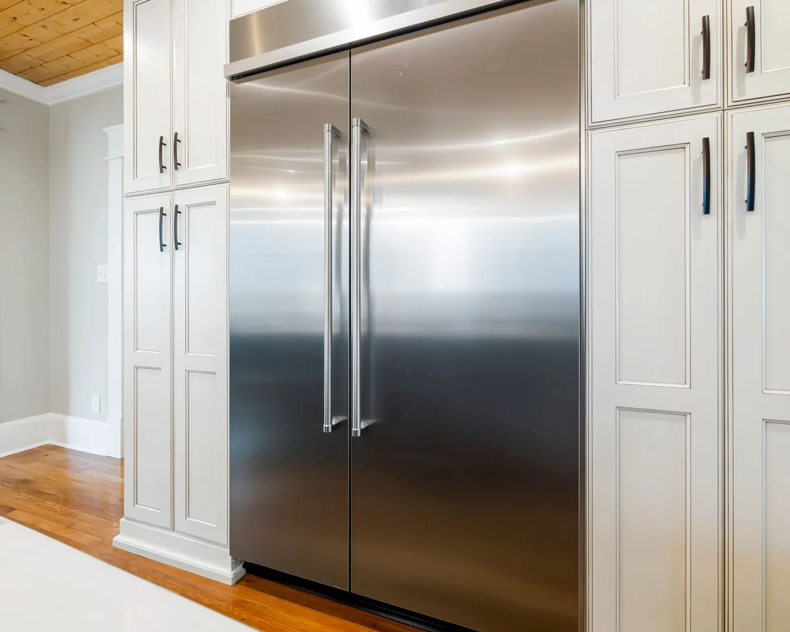
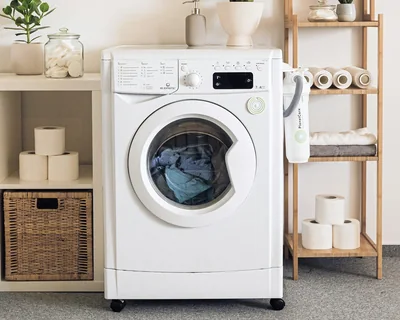
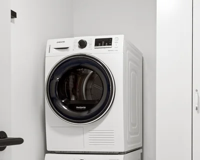
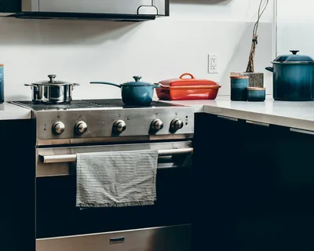
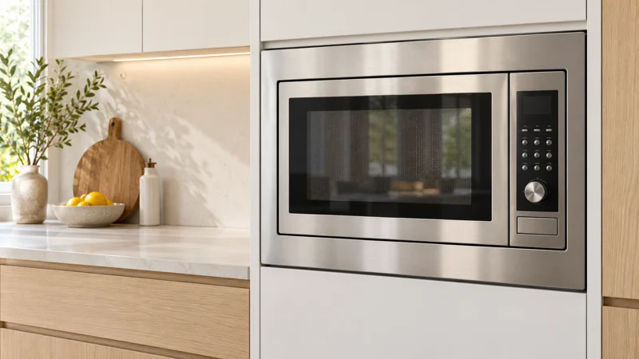

RefrigeratorsCooling & iceTreasure Valley
Samsung Appliance Repair
Treasure Valley
Appliance repair requests for Samsung appliances in Treasure Valley, subject to independent-provider availability. Choose the equipment and tell us what is happening.
- Cooling and temperature changes
- Ice maker and dispenser symptoms
- Leaks and unusual sounds
Local design preview · requests are not sent
Samsung appliance types
Choose the equipment that needs attention.
Washer
Dryer
Range
Microwave
Common Samsung repair requests
Describe the symptom and any message; diagnosis comes from the assessment.
Refrigerator cooling and ice production
Include when it began, which function is affected and the model information you already have.
Washer fill, drain and spin symptoms
Include when it began, which function is affected and the model information you already have.
Dryer heating and cycle interruptions
Include when it began, which function is affected and the model information you already have.
Range and microwave control problems
Include when it began, which function is affected and the model information you already have.
Samsung refrigerator repair
Equipment, symptoms and a clear assessment before repair work.
For Samsung equipment, start with the model and installation. Mention whether the problem is continuous, intermittent or limited to one function.
- Poor cooling. The fresh-food compartment, freezer or both are warmer than expected.
- Water leaks. Water collects inside a compartment, below a drawer or around the appliance.
- New or unusual noise. Buzzing, clicking, rattling or grinding differs from the usual operating sound.
During the visit, the independent provider checks the affected system, explains the findings and discusses the proposed work before you decide.
Samsung washer repair
Equipment, symptoms and a clear assessment before repair work.
For Samsung equipment, start with the model and installation. Mention whether the problem is continuous, intermittent or limited to one function.
- Will not start. The controls do not respond or a cycle will not begin.
- Water will not drain. Water remains in the drum or the machine stops before draining.
- Water leaks. Water appears at the door, dispenser or floor during a cycle.
During the visit, the independent provider checks the affected system, explains the findings and discusses the proposed work before you decide.

Samsung dryer repair
Equipment, symptoms and a clear assessment before repair work.
For Samsung equipment, start with the model and installation. Mention whether the problem is continuous, intermittent or limited to one function.
- Will not start. The dryer does not begin a cycle or its controls do not respond.
- No heat or damp clothes. The drum turns but the selected heated cycle does not dry normally.
- Excessive heat. The appliance or load seems unusually hot. Stop using a dryer with signs of overheating.
During the visit, the independent provider checks the affected system, explains the findings and discusses the proposed work before you decide.

Samsung oven & range repair
Equipment, symptoms and a clear assessment before repair work.
For Samsung equipment, start with the model and installation. Mention whether the problem is continuous, intermittent or limited to one function.
- Oven does not heat. The controls respond but the selected cooking mode does not warm normally.
- Uneven baking. Cooking results vary across the cavity or between racks.
- Burner ignition problems. A cooking zone does not ignite or respond as expected.
During the visit, the independent provider checks the affected system, explains the findings and discusses the proposed work before you decide.

Samsung microwave repair
Equipment, symptoms and a clear assessment before repair work.
For Samsung equipment, start with the model and installation. Mention whether the problem is continuous, intermittent or limited to one function.
- Heating problems. Describe whether the appliance runs without the usual heating result. Do not run empty test cycles.
- Door and drawer operation. Mention a drawer that stops, a door that will not close or a latch that behaves differently.
- Controls and display. Record an exact code, unresponsive control or repeated interruption.
During the visit, the independent provider checks the affected system, explains the findings and discusses the proposed work before you decide.

Helpful Samsung appliance guides
REFRIGERATOR
Refrigerator not cooling
Separate a warm refrigerator compartment from a freezer problem. That distinction is more useful than guessing which part has failed.
Read the guide REFRIGERATORRefrigerator leaking water
Water inside a compartment and water on the kitchen floor are different symptoms. Note where it first appears.
Read the guide REFRIGERATORIce maker not working
An empty ice bin, small cubes and ice that will not dispense describe different problems.
Read the guide REFRIGERATORRefrigerator freezing food
Note whether food freezes in one part of the refrigerator or across the fresh-food compartment.
Read the guide REFRIGERATORFreezer not freezing
Describe the freezer separately from the refrigerator, including whether the appliance is a standalone freezer.
Read the guide REFRIGERATORRefrigerator making noise
A new rattle, buzz or repeated clicking is easier to explain when you describe when and where you hear it.
Read the guideTreasure Valley request areas
Boise, Nampa and Caldwell, plus proposed neighboring cities.
BoisePrimary request cityNampaPrimary request cityCaldwellPrimary request cityMeridianProposed · availability checkEagleProposed · availability checkStarProposed · availability checkKunaProposed · availability checkMiddletonProposed · availability check
City names identify request areas, not confirmed technician coverage. Every visit requires an availability check.
Frequently asked questions
Useful answers before you start a request.
Which Samsung appliances are included?
Our Samsung service categories include Refrigerator, Washer, Dryer, Range, Microwave. Mention the exact model and installation so the visit can be arranged around the equipment.
Is AppliMend affiliated with Samsung?
AppliMend is an independent appliance repair service. The brand name identifies the equipment; it does not imply manufacturer affiliation or authorization.
What should I have ready?
A short symptom description, any exact display message and the model number if you already have it. There is no need to remove panels or move a built-in appliance.
Have another question?
Need help with your Samsung appliance?
Start with your city, the appliance and a short description of the problem.
Request Appliance ServiceKitchen & laundry appliances · Treasure Valley · Availability checked first